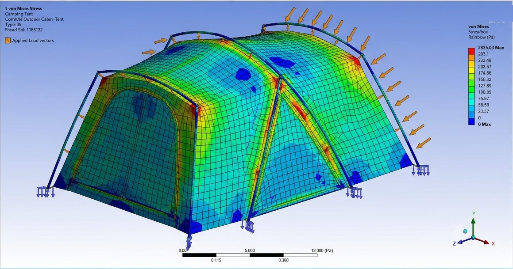
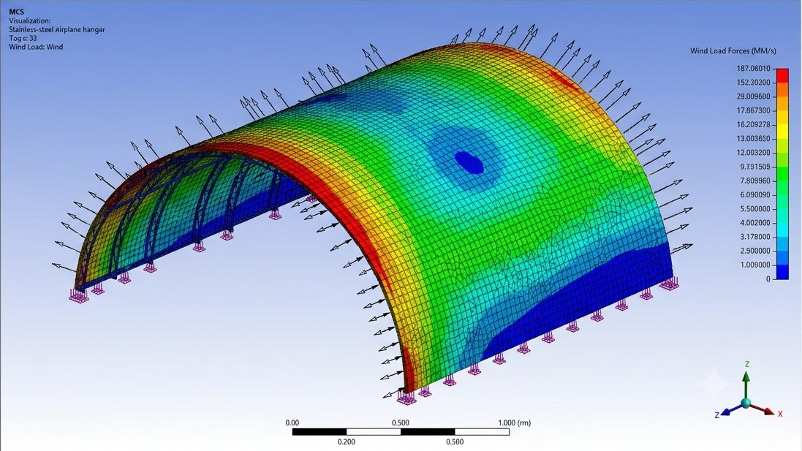

Automatic Fire Extinguisher and Window Breaking System for Passenger Cars
Inventors: Vinod Kumar Verma, Arpit Mathur, Jaya Khatwani · Government Engineering College Ajmer (application 201811026495).
A safety system that detects fire in a passenger car, extinguishes it automatically and breaks the window so occupants can escape.

Engineering expertise for industry & government
We have delivered consultancy work for various industries and government projects, and we are open to new consultancy assignments: structural analysis, material testing, research, design, plant commissioning, business scale-up and much more.


Areas of expertise
Let's build something together
Whether you are a student, a researcher or an industry professional, we welcome collaboration in these fields. Write to us with a short description and we will get back to you.
Consultancy projects
Structural and CFD analysis, material testing, R&D, design and testing, plant commissioning, capacity building, scale-up, etc.
Discuss a projectM.Tech & Ph.D. guidance
Students interested in pursuing an M.Tech or Ph.D. under Dr. Verma's guidance, by joining Engineering College Ajmer or as a scholar of another university through research collaboration, are welcome to get in touch. Please share your background and research interest.
Enquire about guidanceExpert lectures & lab setup
Invite Dr. Verma for expert lectures, keynote talks, technical advice, lab-setup guidance and more in these domains. Faculty and industry professionals are equally welcome to collaborate.
Send an invitationInnovations that made the news

Automatic gear system
Microcontroller-based automatic gear shifting for auto-clutch bikes.
Anti-roll braking
A braking concept to reduce vehicle roll-over risk.

Smart stick
Assistive smart stick project featured in Dainik Bhaskar.

SAE BAJA
ECA team at the SAE BAJA main round.

Lab experiments
Hands-on experiments in renewable energy and automobile labs.

Air Force seminar
Seminars connecting students with defence and industry experts.
Selected research
Optimizing Glass to Metal Composite Seal Performance: An integrated approach with ANN, multiple regression and Taguchi
Journal of Polymer and Composites
Vehicle safety innovations and electric mobility: technologies, trends, and challenges
Int. Journal of Innovative Trends in Multidisciplinary Research
Water-Efficient Air-Cooling Systems: Engineering Sustainable Climate Control
Int. Journal for Research Trends and Innovation
Automated Gear Shifting for Auto Clutch Bikes: A Microcontroller Approach
Int. Journal of Scientific Development and Research
Factors affecting the performance of glass–metal seal of solar receiver tubes: a review
Int. Journal of Applied Engineering Research
Design and Development of Glass-Metal Joints and their Characterization for Solar Receiver Tube
IIT Jodhpur (M.Tech research)